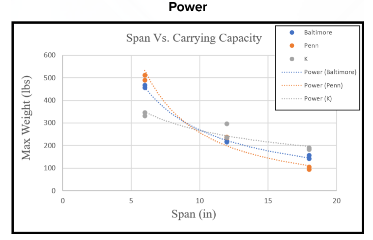

Research Question
My research investigated the relationship between bridge span and carrying capacity across three different truss bridge designs.
I focused on Baltimore, Pennsylvania, and K-truss designs and compared their performance using physical models.
Experimental Design
I created physical bridge models using PLA and tested their ability to carry increasing loads. Three models of each bridge type were produced for the experiment.
Data Collection
During testing, I recorded measurements including the load carried by each bridge, deflection, and model mass. Bridges were tested until failure or until reaching the maximum testing load.
The maximum testing load was 70 pounds.
Statistical Analysis
I used statistical methods to analyze the experimental data and determine whether relationships existed between bridge span and carrying capacity.
The analysis included correlation, regression, and ANOVA. These methods allowed me to compare the bridge designs using more than just the individual test results.

Research Paper
The project resulted in a full AP Research paper examining the experimental results and their implications for bridge design.
This project gave me experience designing an experiment, collecting physical data, analyzing results, and communicating technical findings.